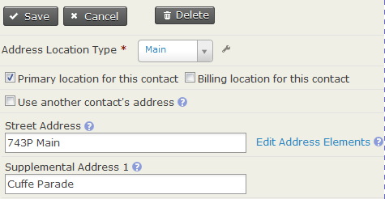
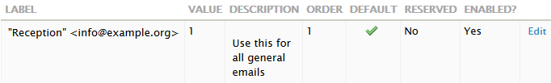

Initial configuration settings¶
Use this reference to check what the general configuration settings control, including their defaults, options and important limitations.
Language and region¶
Localization changes the language displayed in CiviCRM and region-specific formats for dates and money, including currency. CiviCRM is localized for the United States by default. Review these settings if you use CiviCRM in another country or language, or need to store contact addresses in countries other than the United States.
Translations for a number of languages are available when you download CiviCRM. Community members contribute them; if your language is unavailable, you may wish to translate it. A translation guide is available on the wiki.
A site can support multiple languages. Users can then choose from available languages after logging in, and you can store language-specific text such as custom field labels, online contribution pages, campaign information and event descriptions.
| Setting | Behaviour |
|---|---|
| Default Language | If additional language files are installed, selects a default other than US English for all CiviCRM users. |
| Inherit CMS Language | By default, CiviCRM's language is independent of the CMS language. Set this to Yes to use the language in use in the CMS. |
| Available Languages | Appears when Inherit CMS Language is No and makes additional languages available to users. Selecting more than one shows a language switcher block for choosing the interface language. In multi-lingual mode, the available languages are those configured in the database. |
| Default Language for contacts | Sets the default preferred language for a new contact. Preferred Language is used for some communications on multi-lingual sites. |
| Multiple Languages Support | Multi-lingual mode modifies database tables to store translations of certain fields. For example, with English and French configured, it creates an English and a French field for information such as an event title. This can help organisations operating in multiple languages. |
The localization page also has thousands separator and decimal delimiter settings for displaying numbers: for example, 1,000.00 in the US and 1.000,00 in Denmark. From CiviCRM 5.43, these settings are ignored if you add the following line to civicrm.settings.php; the system then decides based on the locale. Letting the system decide is likely to work better if you communicate in more than one language.
define('IGNORE_SEPARATOR_CONFIG', TRUE);
Organization Address and Contact Info¶
This screen identifies the organisation or entity that owns the installation. Its name and address identify your organisation in CiviMail mailings when you include the {domain.name} and {domain.address} tokens.
Enter a valid email address belonging to your organisation. It is used as the From field in system-generated, automated emails.
Enable components¶
A new installation has CiviContribute, CiviEvent, CiviMail, CiviMember and CiviReport enabled. You can disable components you do not need, enable CiviCampaign, CiviCase, CiviGrant or CiviPledge, and return to this page later.
Disabling a component you have used retains its information; it will be there if you re-enable the component. Disabling a used component would be unusual. If your goal is to simplify the administration menu or advanced search page, consider permissions instead.
Display Preferences¶
| Setting | Behaviour |
|---|---|
| Viewing Contacts | Controls tabs on a contact record. For example, deselect Relationships if you do not track them. Contributions, Pledges, Memberships, Events, Grants and Cases tabs are also hidden when their corresponding components are disabled. |
| Viewing Smart Groups | Controls the display of smart groups to which a contact belongs. |
| Editing Contacts | Controls sections of the add and edit contact forms. For example, deselect Demographics if you do not record Gender and Birth Date for individuals. |
| Contact Search | Controls sections in Advanced Search. For example, deselect Relationships if you do not track or search them. |
| Check for Similar Contacts | Controls how new contacts are checked for similarity to existing contacts. |
| Notify Activity Assignees | When enabled, emails assignees of new activities a copy of the activity. You can suppress emails for specific Activity Types by entering them in Do not notify assignees for. |
| Contact Dashboard | Controls which sections constituents can see, including subscribed groups, contribution history and event registration information. For example, deselect contribution history if constituents should not see their own. |
| WYSIWYG Editor | Select CKEditor for an editor that helps users enter text in fields allowing HTML formatting, such as the introduction to an online contribution page. You can configure CKEditor to change its functions and toolbar order through Configure CKEditor. Select Textarea if you do not want a WYSIWYG editor. |
| Enable Popup Forms | On by default. Uncheck it to open forms by refreshing the page instead. |
| Individual Display Name | Sets the display-name format for individual contacts. |
| Individual Sort Name | Sets the sort-name format for individual contacts. |
| Menubar position | Places the CiviCRM menu above, below or in place of the CMS menu, or hides it. |
| Menubar color | Sets the menu's background colour. For accessibility, choose one that contrasts with the menu font colour; use a free online contrast ratio checker if unsure. |
| Backend Theme | Selects a theme installed through the Extension Manager, or turns off CSS theming with None (Unstyled). Automatic uses CiviCRM's default theme, Greenwich. |
| Frontend Theme | Selects a theme or removes theming for front-end pages. |
Address Settings¶
At Localization > Address Settings, you can change address-editing fields and the layout of addresses displayed on screen or printed on mailing labels. CiviCRM uses tokens, such as {contact.street_address}, to refer to database fields.
Mailing Labels¶
Mailing Labels controls label formatting. The default is:
{contact.addressee}
{contact.street_address}
{contact.supplemental_address_1}
{contact.supplemental_address_2}
{contact.city}{, }{contact.state_province}{ }{contact.postal_code}
{contact.country}
Keep {contact.addressee} in the format if you want the addressee's name on the label. When generating labels from a contact list, users can choose from label types corresponding to label manufacturer codes.
Address Display¶
Address Display controls the layout of contact and event location addresses shown on CiviCRM screens. The default is:
{contact.address_name}
{contact.street_address}
{contact.supplemental_address_1}
{contact.supplemental_address_2}
{contact.city}{, }{contact.state_province}{ }{contact.postal_code}
{contact.country}
The format also applies to event locations, despite using contact tokens. {contact.address_name} is useful when an event location has a name such as “Smithson Hall”.
Address Editing Fields¶
Address Editing Fields lets you hide unused fields to simplify forms. For example, you can deselect latitude and longitude if you do not record them for contacts.
- Street Address Parsing uses the US Postal Service's (USPS) Postal Addressing Standards to separate an address into Street Number, Street Name and Apt/Unit/Suite. Addresses that follow these standards help keep data consistent and make best use of parsing. When parsing is on, Edit Address Elements lets you view or edit the parsed address while editing an address.

- Address Standardization is an optional interface to the USPS Address Standardization web service. You must register for the USPS service. If approved, you receive a User ID and service URL. The URL supplied by USPS does not begin with
http://; add that prefix when entering it in the CiviCRM settings field.
Mapping and Geocoding¶
CiviCRM supports Google and OpenStreetMap mapping services to show contact addresses and event locations on a map. Enabling mapping requires a provider selection and a key for your site from that provider.
You can select a Geocoding Provider that is the same as or different from the mapping provider. Once enabled, geocoding calculates or retrieves latitude and longitude and inserts them into contact and event records as you add or edit address data. Extensions can add other mapping and geocoding services.
Search Settings¶
These settings control search behaviour, including wildcards and the data included in quick search results. Changes can improve performance with large datasets.
A wildcard substitutes for other characters in a search: % matches zero or more characters, while _ matches one character. For example, Volunteer% as an Activity Subject matches subjects beginning with “Volunteer”, such as “Volunteer for Open House” or “Volunteering Opportunities”.
| Setting | Behaviour |
|---|---|
| Automatic Wildcards | By default, Name searches act as though the text has % on both sides: ada can match “Adams, Janet” and “Nadal, Jorge”. Disabling this can speed searches significantly in large databases, but users must enter % or _ for partial-name searches. |
| Include Email | By default, Name searches also search email addresses. Disabling this can speed searches significantly in large databases, but users must use Email fields in Advanced Search, Search Builder or Profiles to find contacts by email address. |
| Include Nickname | Nicknames are not included in Name searches by default. Set this to Yes to include them. |
| Include Alphabetical Pager | Disabling it hides the alphabetical pager on search screens and improves response time for large datasets. |
| Include Order By Clause | Disabling it leaves search results unordered and significantly improves response time for large datasets. |
| Default Contact Search Profile | Selects a Profile to override the default columns in Find Contacts results. |
| Smart group cache timeout | Sets how many minutes to keep a smart group's cached contact list before refreshing it. Smart groups are saved searches; caching avoids rerunning the search on every access. The default, 0, empties the cache as soon as a contact is edited or added. A value such as 5 minutes or longer may reduce server load when contact data changes frequently, but users may see old results for a few minutes. |
| Autocomplete Contact Search | When enabled, selected fields appear in autocomplete lists and the navigation menu's Quick Search box. Contact name is always included. |
| Contact Reference Options | Selects fields shown in autocomplete results for Contact Reference custom fields. Contact Name is always included. |
| Autocomplete Results | Sets the maximum contacts shown at one time while typing in an autocomplete field. The default is 10. |
| InnoDB Full Text Search | Enables InnoDB full-text search optimizations when using MySQL 5.6 or later. |
Public Contact Reference fields: To use custom contact reference fields in profiles on public pages, assign the access contact reference fields permission to the anonymous role. In most situations, use Limit List to Group when configuring a contact reference field for a public form so that you do not expose your entire contact list.
Miscellaneous Settings¶
| Setting | Behaviour |
|---|---|
| Dashboard Cache Timeout | Sets how many minutes to cache dashboard dashlet content. |
| Checksum Lifespan | Sets how many days a personalized, hashed link remains valid. |
| Contact Trash and Undelete | When enabled, moves deleted contacts to the trash instead of destroying them. Users with the proper permission can find and restore them, or delete them permanently. |
| Logging | See Logging Settings in the System Administrator Guide. |
| Attach PDF copy to receipts | When enabled, attaches a PDF receipt during event sign-up or online contribution. |
| Path to wkhtmltopdf executable | Specifies the executable path for an alternative PDF-generation utility that may perform better for large numbers of PDF letters or receipts. A system administrator must download and install it. Warning: wkhtmltopdf is no longer under active development. Its latest tagged release, 0.12.6 from June 2020, is insecure and should not be used. |
| New Version Alerts | When enabled, displays on-screen alerts about new CiviCRM versions to users with Administer CiviCRM permission. Requires Version Check & Statistics Reporting to be enabled. |
| Version Checking and Statistics Reporting | Checks for a newer stable CiviCRM version and displays alerts on the main CiviCRM Administration page. It also anonymously reports CiviCRM, PHP, MySQL and framework (Drupal/Joomla!/WordPress) versions, the default language, and record counts—but no actual record data—to the CiviCRM team to help prioritize development. Set it to No if you do not want this information reported. |
| Display "empowered by CiviCRM" | When enabled, shows “empowered by CiviCRM” at the bottom of public forms to increase awareness of CiviCRM. |
| Maximum Attachments | Sets the maximum number of files, such as documents or images, attachable to emails, activities and grant records. The default is 3. |
| Maximum File Size (in MB) | Sets the largest file attachable to emails or activities. The PHP configuration file, php.ini, must support a file size at least as large. |
| Allow second-degree relationship permissions | When enabled, a contact who can edit a related contact inherits that contact's permission to edit other related contacts. For example, this could let a class teacher edit student records when both teacher and students are linked by relationships to the class, set up as an organisation sub-type. |
Contact Types¶
You can rename the built-in Contact Types—Individual, Household and Organizations—and create or change contact subtypes for more specific uses, such as Student, Parent or Team.
Outbound email¶
CiviCRM supports three ways to connect to a mail server: mail (PHP's built-in mail function), SMTP (Simple Mail Transport Protocol) and Sendmail. Each requires its own settings. See Email System Configuration in the System Administrator Guide for more detail.
- Disable Outbound Email sends no mail. Warning: If you use Online Contribution pages or online Event Registration, turn off their automated receipts and registration confirmations, which are enabled by default, before disabling outbound email. Otherwise, constituents will see errors after completing a contribution or registration.
- Redirect to Database records all emails as archived mailings instead of sending them.
From Email Addresses¶
CiviCRM uses the default From address defined here for automated emails. If you entered an address on the Domain Information screen, it appears here.

For an email sent by a user, that user's primary email address is the default From address. They can instead select a general address defined under From Email Address Options. To restrict users to those options rather than their own Primary address, use the Outbound Mail settings at Administer › System Settings › Outbound Email(SMTP/Sendmail).
Payment Processors¶
Payment processors handle credit card transactions and transfer funds to your organisation's bank account. You need one configured if you plan to accept online contributions, online membership sign-up or renewal, or online event registration.
CiviCRM supports several processors, and third-party developers can add others. Pricing and features differ, so review the factors for selecting a processor. Configuration and testing steps differ by processor; see installing payment processors in the System Administrator Guide.
Permissions and system status¶
See Permissions and access control for information on setting permissions.
The system status screen at Administer > Administration Console > System Status, or /civicrm/a/#/status, reports potential problems with your installation, configuration or server environment. See System Status in the System Administrator Guide for help interpreting its results and responding to reported problems.